IDE通用功能和逻辑
下面整理IDE的通用逻辑和功能：
动态提示=自动完成=代码补全
一般来说，指的是IDE集成的动态提示的功能
当前，现在有些功能强大的编辑器，比如VSCode，也支持部分语言（或库）的动态提示了。
注：VSCode中的动态提示，叫做：
IntelliSense
举例：
Eclipse的动态补全提示
比如字符串支持哪些c开头的函数或属性：
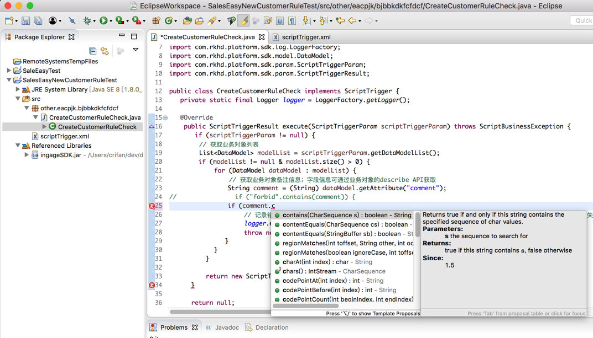
PyCharm的动态补全提示
比如Selenium的driver有哪些函数或属性：
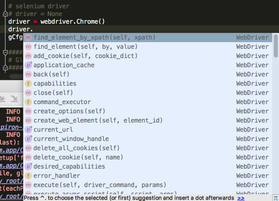
Xcode的动态补全提示
XCGLogger的log的属性level有哪些
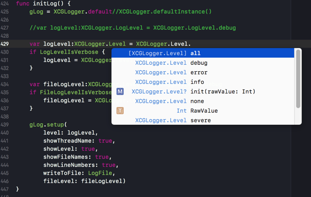
VSCode的动态补全提示
VSCode，在安装了补全插件后：
代码调试期间，看看python的os模块的有哪些函数：
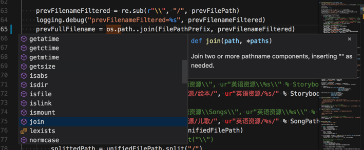
焦点提示
在写完代码时，鼠标移动上去还可以看到函数/变量的描述和提示
算是 自动完成的相关功能
Eclipse的焦点提示
提示Java的string的contains的函数功能说明：
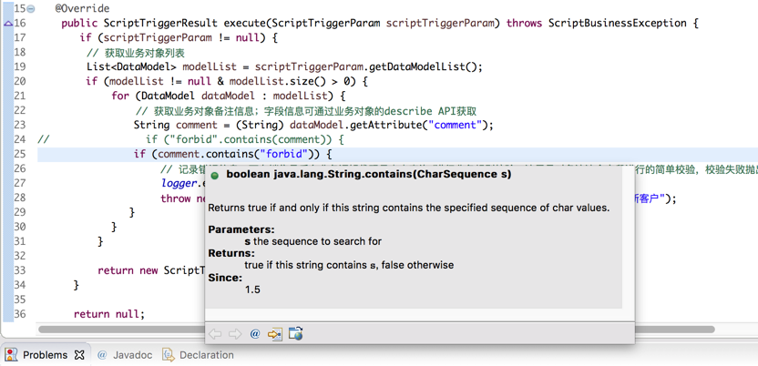
VSCode的焦点提示
安装了插件的文本编辑器VSCode中也支持提示：函数/变量/库的说明
提示Python的urllib2的功能介绍：
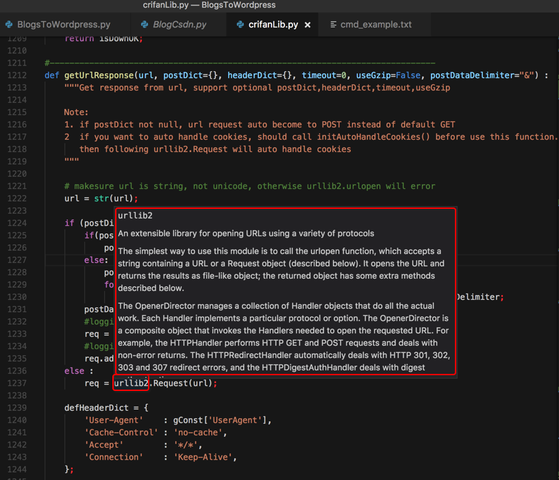
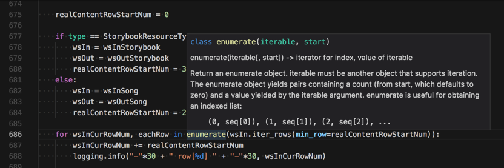
Xcode的焦点提示
Xcode 9 中需要使用按钮才能看到函数描述
command后，选中：Alt
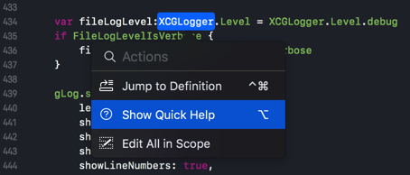
才能看到函数描述：
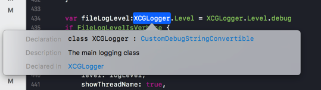
智能检测：没有用到的变量的提示警告
对于代码中，定义了却没用到的变量，会智能检测出来并提示
IDE：Xcode支持
IDE：PyCharm也支持
比如下图中的cmdPara1，没有被用到：
- 颜色：灰色
- 而普通代码是黑色
- 能区分出来
- 而普通代码是黑色
- 鼠标移动上去，会提示
- 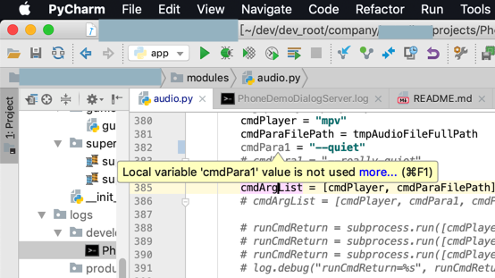
Editor：VSCode后来也支持
VSCode 1.24之后也支持：
Unused variable detection - Unused variables are greyed-out in your JavaScript/TypeScript files
调试
调试时显示的信息
各种IDE，调试期间，所显示的信息，大致都是这几类：
- 变量
- 局部变量
- 全局变量
- 监视的变量
- 等等
- 断点
- 查看全部断点
- 禁止相关断点
- 等等
调试代码的通用逻辑
变量值变化时高亮提示
当你调试代码时，变量值和之前相比有改变时，调试工具会标识出来的：
- 举例
- VSCode
- 之前
- 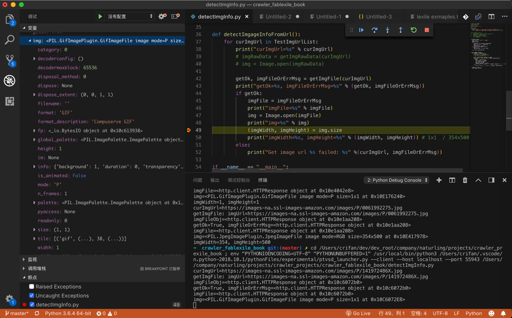
- 当行运行之后
- 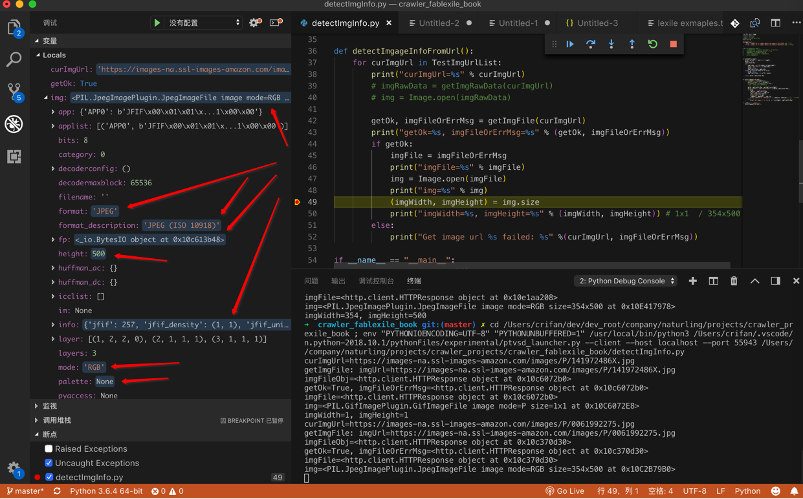
- 之前
- PyCharm
- TODO：
- 添加例子过来
- 值的变化是用红色标识的
- 添加例子过来
- TODO：
- VSCode
断点调试
对于断点的逻辑也是通用的：
比如运行到断点暂停执行时，点击断点的调用堆栈call stack，可以快速定位到代码位置：
- PyCharm调试Python
- 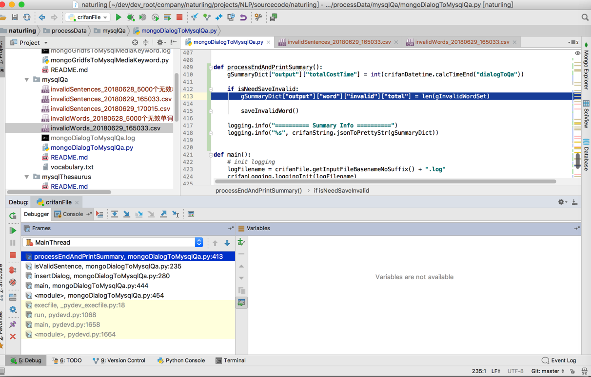
- 点击后，可以跳转到对应代码的位置
- 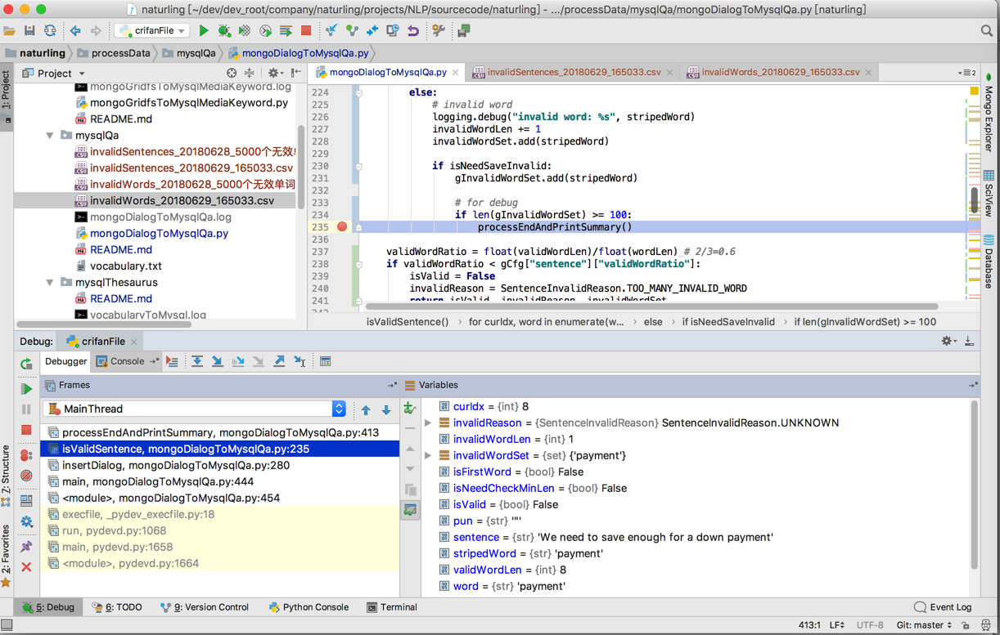
调试异常
调试出错异常时，点击可跳转到出错的代码的位置：
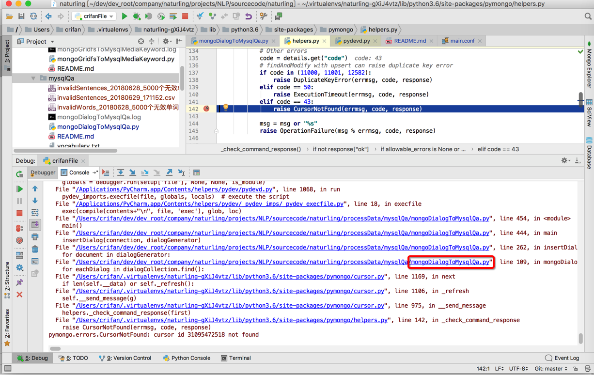
点击对应错误信息中的代码位置，可以跳转到对应源文件：
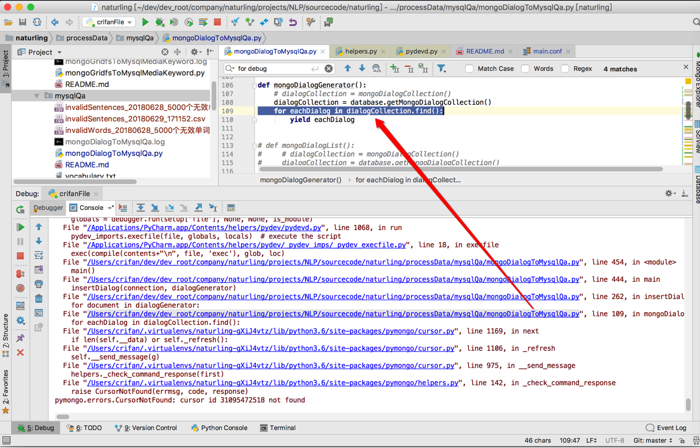
编译
IDE中各种界面上功能内部都是对应的调用底层的命令去实现的
比如IDE中的编译这个按钮，点击后，内部的过程是：
使用不同的编译器，传递对应的include的头文件、查找库函数的路径、链接对应的库等等，最终去编译生成对应的输出的目标文件的
比如：
［已解决］Xcode项目编译出错：Command failed due to signal: Segmentation fault: 11
中而发现：
Xcode中底层是用swiftc去编译swift代码的
关于更多的例子，详见：编译和链接 · 计算机编程通用逻辑知识概念
集成终端Terminal
很多IDE集成了终端
好处是 在用ide开发期间，同时使用终端去做其他方面的测试。
举例：
VSCode写gitbook时：用终端去build编译输出为htmlpycharm时，调试crifanLib.py时：测试提取脚本文件名，用终端测试能否正常解析输入的文件名
重构-重命名
对于重构中的变量、函数、类等重命名，在逻辑不复杂，且在当前单一文件内，其实多数编辑器也是支持的。
但其实是很多更加智能的IDE，对于重命名，支持的会更好。
比如：
- PyCharm支持重命名
- 新版Xcode9（+ swift 3.2？／4.0?) 支持swift的重构，包括rename了
- 之前版本是不支持swift的rename的